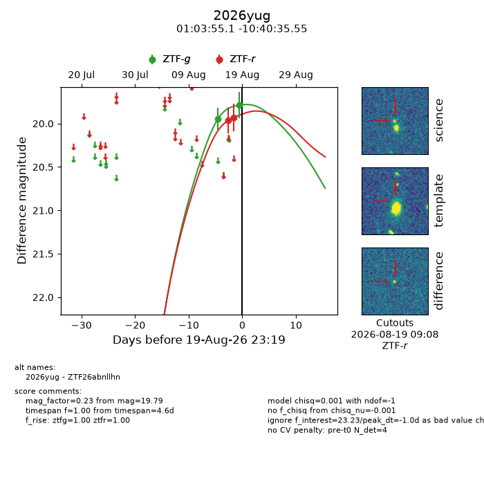
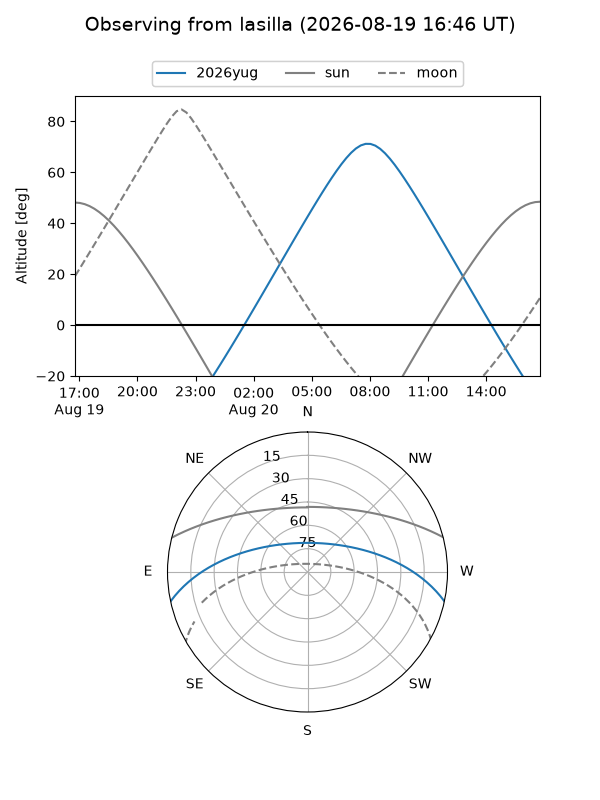
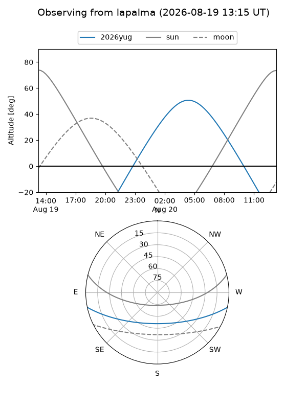
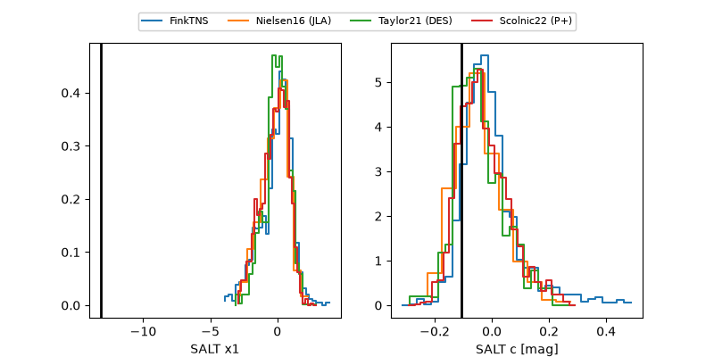

2026yug
Target 2026yug at 2026-08-20 11:20
Aliases and brokers:
FINK-ZTF: ztf.fink-portal.org/ZTF26abnllhn
Lasair-ZTF: lasair-ztf.lsst.ac.uk/objects/ZTF26abnllhn
ALeRCE-ZTF: alerce.online/object/ZTF26abnllhn
YSE-PZ: ziggy.ucolick.org/yse/transient_detail/2026yug
TNS name: wis-tns.org/object/2026yug
Direct TNS query: direct search
alt names
ZTF26abnllhn (ztf,fink_ztf)
2026yug (tns,yse)
Coordinates:
equatorial (ra, dec) = 15.9797,-10.67654
equatorial (HMS+DMS) = 01:03:55.13,-10:40:35.55
galactic (l, b) = (133.6519,-73.28798)
Flags:
TNS type: nan
peak dt: -0.5
Photometry:
last ztfg=19.79, ztfr=19.93
2 ztfg, 2 ztfr detections
Lightcurve

Visibility


Additional plots
